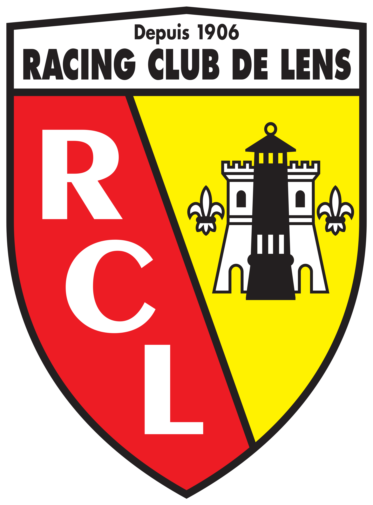

Fondé en 1906, le Racing Club de Lens est l'un des clubs les plus singuliers du football français. Ancré dans le bassin minier artésien, longtemps soutenu par la Compagnie des Mines de Lens, le RCL a construit son identité sur des valeurs qui ne s'inventent pas : ferveur, fierté, authenticité, transmission. Là où d'autres clubs ont bâti leur notoriété à coups d'investissements massifs, Lens a forgé la sienne dans la sueur et la solidarité d'un peuple entier. Champions de France 1998, vainqueurs de la Coupe de la Ligue 1999, qualifiés à plusieurs reprises en compétitions européennes — tout cela avec seulement le dixieme plus grand budget de Ligue 1. Le centre de formation Made In Gaillette, inauguré en 2002, incarne cette philosophie : ici, les joueurs ne s'achètent pas, ils se construisent.
Rares sont les clubs qui peuvent se targuer d'une histoire aussi authentique que celle du Racing Club de Lens. Né au cœur des corons, porté par une communauté ouvrière qui a fait du football bien plus qu'un spectacle, le RCL a écrit des pages que l'argent seul ne peut pas acheter. Le titre de Champion de France 1998 en est la preuve la plus éclatante : conquis avec des moyens modestes, dans un Stade Bollaert-Delelis en fusion, face à des adversaires aux budgets sans commune mesure. Depuis, malgré les hauts et les bas inévitables, le club n'a jamais renié son âme. Les grandes institutions du football français ont leur histoire — Lens a la sienne, et elle est bâtie sur quelque chose de bien plus durable que les transferts record.
Aujourd'hui, le Racing Club de Lens s'impose comme une valeur sûre du football français. Avec seulement le dixième budget de Ligue 1, Lens rivalise pourtant avec des formations disposant de moyens bien supérieurs, et n'hésite pas à faire tomber les meilleures équipes françaises et européennes. Sous la direction de Pierre Sage, le collectif Sang et Or se distingue par un bloc défensif rigoureux, une intensité constante et une solidarité à toute épreuve — des qualités qui rappellent l'héritage des anciens. Au Stade Bollaert-Delelis, l'un des stades les plus atmosphériques de France, les 38 000 supporters offrent un soutien sans faille qui fait la réputation du club bien au-delà des frontières du Pas-de-Calais. Un club qui grandit, sans jamais perdre ce qui le définit.
PREMIERE COUPE DE FRANCE POUR LENS
Les Corons — Pierre Bachelet